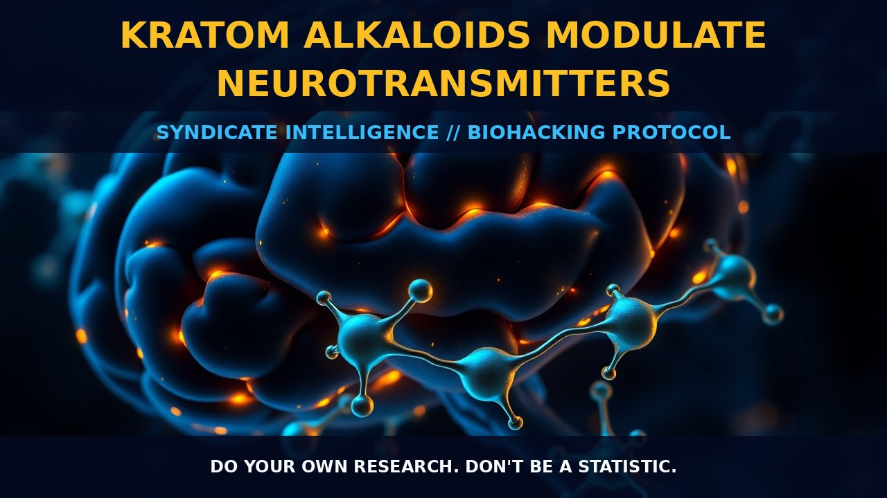

Kratom Alkaloids Modulate Opioid Pathways

MECHANICS
The main alkaloids of kratom—mitragynine and 7-hydroxymitragynine—are primarily responsible for its psychoactive properties. Mitragynine is the most abundant, making up about 2% of dry kratom leaves by weight and contributing approximately 12–66% to total alkaloid content. It acts as a partial agonist at mu-, delta-, and kappa-opioid receptors, with varying affinity for each. Additionally, it interacts with adrenergic and serotonergic systems, leading to stimulant effects. In contrast, 7-hydroxymitragynine is less abundant but exhibits higher potency at mu-opioid receptors compared to mitragynine, contributing significantly to the analgesic properties of kratom.
These alkaloids also modulate neurotransmitter release through GABAergic and glutamatergic pathways. They influence calcium influx in neurons, crucial for synaptic activity and cell signaling. Moreover, they interact with adenosine receptors, contributing to sedative effects at higher doses. Mitragynine enhances the release of dopamine and norepinephrine, providing both stimulant and mood-elevating properties.
BIOLOGICAL LEVERAGE
The biological leverage of kratom alkaloids lies in their ability to modulate multiple neurotransmitter systems simultaneously. As partial agonists at opioid receptors, they provide a balanced interaction that can alleviate pain without the full intensity of pure mu-opioid agonists like morphine. This dual action benefits those seeking natural alternatives for pain management and mood enhancement.
Kratom alkaloids also influence adrenergic signaling, promoting norepinephrine release in the brain and periphery. This modulation supports increased alertness and energy levels while contributing to an overall sense of well-being. Engagement with GABAergic pathways enhances their sedative potential, making them suitable for stress relief and relaxation.
Interaction with adenosine receptors is another critical aspect. By blocking adenosine A2A receptors, these alkaloids stimulate dopamine release, promoting feelings of euphoria and alertness. This mechanism also contributes to neuroprotective properties, as adenosine receptor antagonism supports neuronal health. Modulation of calcium influx pathways further enhances synaptic plasticity and cognitive function in regions like the hippocampus and prefrontal cortex.
TACTICAL IMPLEMENTATION
When implementing a regimen with kratom alkaloids, carefully consider dosage and timing. Beginners should start with low doses around 2-5 grams of leaf material to assess individual tolerance and response. Mitragynine-rich strains such as Maeng Da or Red Vein varieties are preferred for their balanced stimulant and analgesic effects.
Gradually incorporate kratom into your daily routine, allowing the body to adapt to its unique set of alkaloids. Morning consumption can provide a boost of energy and focus without disrupting sleep patterns, while evening doses offer relaxation benefits. For enhanced cognitive function, combining kratom with nootropics like L-theanine or galantamine enhances synergistic effects on neurotransmitter release.
Stacking kratom with caffeine or green tea extracts amplifies its stimulant properties by enhancing adrenergic signaling and promoting alertness. However, pay attention to timing to avoid overstimulation during rest periods. Incorporating adaptogens such as Rhodiola rosea or Bacopa monnieri can mitigate potential stress responses associated with prolonged kratom use.
To manage tolerance and minimize dependence, consider rotating between different strains of kratom periodically. This rotation helps prevent the body from developing a consistent response to any single strain's specific alkaloid profile. Additionally, taking breaks from kratom every few weeks can help reset your sensitivity. Withdrawal symptoms are typically mild but may include irritability, anxiety, and sleep disturbances. Gradual tapering off is advisable when discontinuing use.
Do your own research. Don't be a statistic.
Prostar Life Hack
Always verify protocol biological leverage with baseline biometric tracking. Data is sovereignty.
[ AUTHOR: LEAD TECHNICAL RESEARCHER ]